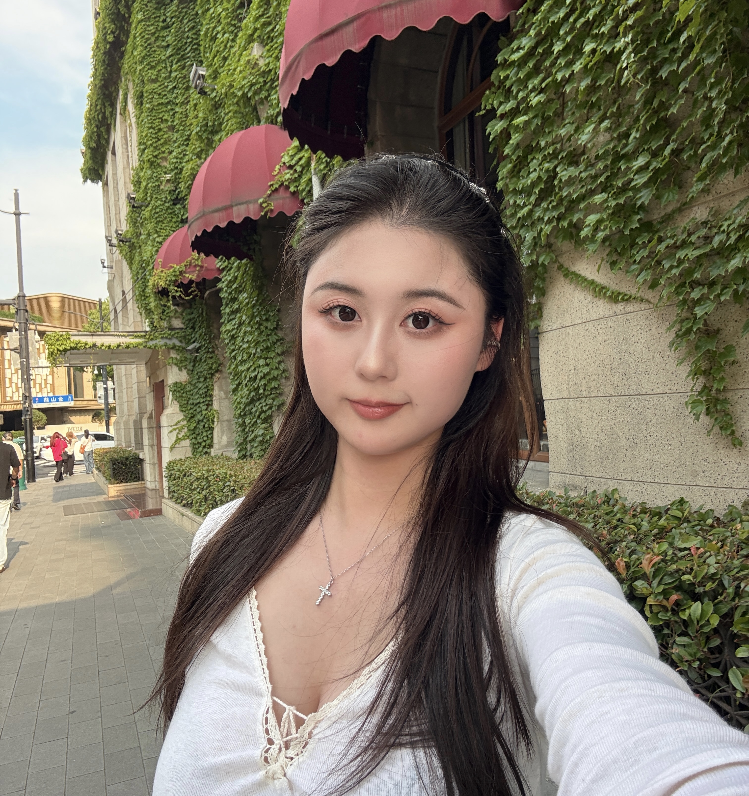

Feiyu Du | 杜菲瑀
I am a first-year Ph.D. student in Computer Science at The University of Texas at Dallas, advised by Prof. Dingzhu Du. My research focuses on multimodal learning, VLLMs, world models, and quantum machine learning, with a particular interest in video generation and understanding in social scenarios.
I’m always excited to connect with people working on related topics and explore potential collaborations. Feel free to reach out!
- Multimodal Learning
- VLLMs
- World Models
- Quantum Machine Learning

01
News
Loading news…
02
Publications
Loading publications…